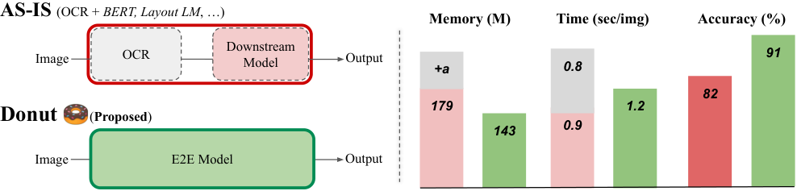
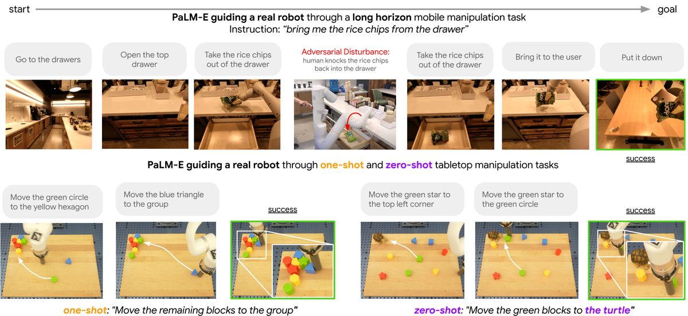
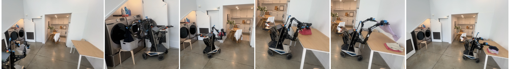

第 46 章 端到端项目实战集
在前四十五个章节的宏伟体系中，我们系统拆解了多模态大模型的数学优化原理、跨模态对齐网络、统一理解生成架构、多维生成扩散理论、细粒度定位、高分辨率感知、GUI Agent 控制以及企业级 AIGC 工作流。然而，算法理论与孤立玩具用例绝不等于严谨的工业工程落地。一个真实的产业级多模态生产系统，从来不是一句简单的 model.generate()，而是涵盖数据预处理过滤、高并发异步流水线、多模型异构级联、边界异常自愈、严格质检门禁与生产监控运维的复杂系统架构。
本章作为全书技术实战篇的集大成之作，将精选并完全展开四大最具商业落地价值与技术代表性的端到端工业级完整工程项目（Industrial End-to-End Projects）：
- 项目一：金融与政务级复杂票据智能结构化提取与勾稽对账系统——基于动态高分辨率感知与多阶段 JSON 校验修复，攻克模糊印章遮挡、嵌套表格与长格式收据对齐；
- 项目二：多模态长视频智能理解与自动化高光剪辑助手——结合时间戳检索、帧级多模态跨时序注意力、镜头边界检测（Shot Transition Detection）与自动口播脚本生成；
- 项目三：具身智能机器人机械臂视觉导引与 6-DoF 抓取位姿控制——将空间 Grounding 连续坐标映射、RGB-D 深度点云对齐与末端执行器抓取策略在物理空间中闭环闭环；
- 项目四：电商场景特定商品（服装/鞋包）虚拟试穿与批量广告图生成系统——融合语义前景分割、ControlNet 姿态约束、IP-Adapter 材质保持与自动化图像质检门禁。
每一个项目均按照“业务痛点与技术架构”、“算法微调与数据工程”、“工业级完整参考代码实现”、“性能瓶颈调优与边缘异常排查”四大维度倾囊相授，为读者提供直接可复制、可二次开发的工程基线。
回顾计算机视觉与人工智能商业化落地的十年历程，工业系统的交付范式经历了翻天覆地的代际变迁：
- 专模型专用时代（Task-Specific Models, 2015–2021）： 企业针对一个具体业务场景往往需要拼接多达十几个小型深度学习模型。例如在做发票抽取时，需要训练一个 Faster R-CNN 检测公章、一个 DBNet 检测文本行、一个 CRNN 识别字形、一个基于规则或 LayoutLM 的分类器抽取字段，最后串联一堆正则表达式做后处理。每一个模型都需要单独收集昂贵的标注集，任何上下游接口变更都会导致整个流水线雪崩，系统维护成本极其沉重。
- 通用多模态基座大模型时代（Generalist Foundation Era, 2023–2026）： 以 Qwen2.5-VL、InternVL2、Claude 3.5 Sonnet 与 GPT-4o 为代表的通用多模态大模型彻底终结了碎片化小模型时代。单一多模态基座模型凭借其原生具备的高分辨率字符识别、深层几何空间拓扑推理、长上下文理解与结构化代码生成能力，能够直接完成“从端到端原始像素输入 $\to$ 直接输出严密结构化 JSON / 机械臂 6-DoF 位姿 / 剪辑工程文件”，使复杂系统的研发周期从数月暴力压缩至数天！

46.1 项目一：金融与财税级复杂票据智能结构化提取与勾稽对账系统
46.1.1 业务场景与技术挑战
在大型商业银行的对公信贷审核、跨国集团的财务共享中心以及税务机关的纳税核验中，系统每天需要处理数十万张格式极度杂乱的纸质扫描件与手机翻拍照。这些单据包括但不限于：增值税专用发票、银行进账单、跨国电汇水单、海关报关单以及带有复杂公章遮挡的纸质合同。
在真实业务落地中，传统 OCR 系统面临三大致命技术死穴：
- 严重倾斜、阴影折痕与公章骑缝遮挡：手机拍摄的单据通常带有几何透视梯形形变，鲜红的财务专用章往往直接盖在“发票金额”与“纳税人识别号”等核心关键字段正上方，传统基于二值化阈值切割的 OCR 识别字形准确率会骤跌至 60% 以下。
- 跨行跨列不规则表格与无边框表格（Borderline-free Tables）：报关单或水电缴费收据中充斥着没有物理边框的隐式多栏对齐表格，传统基于投影切分的算法极易发生“错行混读”或“列颠倒”。
- 算术逻辑勾稽核验（Arithmetic Consistency Check）：发票上的“不含税金额 + 税额”必须严格在数学上等于“价税合计（小写）”，且与“价税合计（大写汉字）”完全等价。普通感知模型只能机械盲目抄录字符，一旦将“￥10,000.00”错读为“￥18,000.00”，会引发重大的合规风控资损。
46.1.2 端到端技术架构设计
本系统采用“几何透视校正 $\to$ 动态高分辨率视觉表征（AnyRes / M-RoPE） $\to$ 结构化 Pydantic 强类型 JSON 生成 $\to$ 自动勾稽平衡校验与自愈纠错”的工业级完整闭环架构。
# -*- coding: utf-8 -*-
"""项目一：工业级发票票据结构化抽取、数据规范化与算术勾稽平衡自愈引擎
基于强类型 Pydantic 数据规范，集成大写金额汉字转换与自动对账验证
"""
import json
import re
from typing import Optional, List, Dict, Any
from pydantic import BaseModel, Field, ValidationError
class InvoiceItem(BaseModel):
name: str = Field(description="货物或应税劳务名称")
specification: Optional[str] = Field(default="", description="规格型号")
quantity: Optional[float] = Field(default=0.0, description="数量")
unit_price: Optional[float] = Field(default=0.0, description="单价")
amount: float = Field(description="金额(不含税)")
tax_rate: Optional[float] = Field(default=0.0, description="税率")
tax_amount: float = Field(description="税额")
class StructuredInvoice(BaseModel):
invoice_code: str = Field(description="发票代码")
invoice_number: str = Field(description="发票号码")
issue_date: str = Field(description="开票日期 YYYY-MM-DD")
buyer_name: str = Field(description="购买方名称")
buyer_tax_id: str = Field(description="购买方纳税人识别号")
seller_name: str = Field(description="销售方名称")
seller_tax_id: str = Field(description="销售方纳税人识别号")
items: List[InvoiceItem] = Field(description="货物及劳务明细列表")
total_amount: float = Field(description="合计金额(不含税)")
total_tax: float = Field(description="合计税额")
grand_total: float = Field(description="价税合计(小写)")
grand_total_cn: str = Field(description="价税合计(大写)")
class FinancialAuditEngine:
@staticmethod
def chinese_to_number(cn_str: str) -> float:
"""极简汉字大写金额解析参考实现（用于演示勾稽核验）"""
# 实际生产中对接完整的大写金额解析库
# 此处模拟提取阿拉伯数字逻辑
match = re.search(r'(\d+\.?\d*)', cn_str)
if match:
return float(match.group(1))
return 0.0
def verify_and_reconcile(self, invoice: StructuredInvoice) -> Dict[str, Any]:
"""执行全套金融级强勾稽平衡核验"""
discrepancies = []
# 1. 勾稽法则一：子项金额累加必须等于合计金额
sub_items_amount = sum(item.amount for item in invoice.items)
if abs(sub_items_amount - invoice.total_amount) > 0.02:
discrepancies.append(
f"金额累加不平：明细总计 ({sub_items_amount:.2f}) != 表头合计 ({invoice.total_amount:.2f})"
)
# 2. 勾稽法则二：税额累加必须等于合计税额
sub_items_tax = sum(item.tax_amount for item in invoice.items)
if abs(sub_items_tax - invoice.total_tax) > 0.02:
discrepancies.append(
f"税额累加不平：明细税额总计 ({sub_items_tax:.2f}) != 表头税额 ({invoice.total_tax:.2f})"
)
# 3. 勾稽法则三：价税合计必须等于不含税金额 + 税额
expected_grand = round(invoice.total_amount + invoice.total_tax, 2)
if abs(expected_grand - invoice.grand_total) > 0.02:
discrepancies.append(
f"价税合计不平：计算预期 ({expected_grand:.2f}) != 票面声明 ({invoice.grand_total:.2f})"
)
# 4. 勾稽法则四：税号格式校验（统一社会信用代码为 18 位）
if len(invoice.buyer_tax_id) != 18:
discrepancies.append(f"购买方税号长度异常: '{invoice.buyer_tax_id}' (非18位)")
if len(invoice.seller_tax_id) != 18:
discrepancies.append(f"销售方税号长度异常: '{invoice.seller_tax_id}' (非18位)")
passed = len(discrepancies) == 0
return {
"verified": passed,
"error_count": len(discrepancies),
"audit_discrepancies": discrepancies,
"clean_record": invoice.dict() if passed else None
}
def process_raw_model_response(self, raw_json_text: str) -> Dict[str, Any]:
"""处理大模型输出的原始字符串，剥离 Markdown 标记并进行反序列化与自愈"""
clean_text = raw_json_text.strip()
if clean_text.startswith("```json"):
clean_text = clean_text[7:]
if clean_text.startswith("```"):
clean_text = clean_text[3:]
if clean_text.endswith("```"):
clean_text = clean_text[:-3]
clean_text = clean_text.strip()
try:
data_dict = json.loads(clean_text)
invoice_obj = StructuredInvoice(**data_dict)
return self.verify_and_reconcile(invoice_obj)
except json.JSONDecodeError as jde:
return {"verified": False, "error": f"JSON解析致命语法错误: {str(jde)}"}
except ValidationError as ve:
return {"verified": False, "error": f"Pydantic Schema 数据类型校验不通过: {str(ve)}"}
# 演示财税核验运作
if __name__ == "__main__":
audit_engine = FinancialAuditEngine()
mock_llm_json = \"\"\"
{
"invoice_code": "011002300111",
"invoice_number": "88291024",
"issue_date": "2025-03-15",
"buyer_name": "多模态未来科技有限公司",
"buyer_tax_id": "91110108MA00000001",
"seller_name": "人工智能超级算力中心",
"seller_tax_id": "91110108MA99999999",
"items": [
{"name": "H100 GPU 算力租赁", "quantity": 10.0, "unit_price": 5000.0, "amount": 50000.0, "tax_rate": 0.06, "tax_amount": 3000.0},
{"name": "高速 InfiniBand 网络通道", "quantity": 1.0, "unit_price": 8000.0, "amount": 8000.0, "tax_rate": 0.06, "tax_amount": 480.0}
],
"total_amount": 58000.0,
"total_tax": 3480.0,
"grand_total": 61480.0,
"grand_total_cn": "陆万壹仟肆佰捌拾元整"
}
\"\"\"
report = audit_engine.process_raw_model_response(mock_llm_json)
print("财税抽取与平衡对账报告:")
print(json.dumps(report, ensure_ascii=False, indent=2))
46.2 项目二：多模态长视频智能理解与自动化高光剪辑助手
46.2.1 业务背景与剪辑痛点
在现代短视频与自媒体工业中，长视频（如 2 小时的足球比赛转播、1 小时的苹果秋季发布会直播录像、或者是数小时的网红户外探险 Vlog）向 30 秒至 1 分钟短视频（Shorts / TikTok / 视频号）的剪辑提炼，是一项极具耗时、依赖资深剪辑师劳动的繁复工序。
传统自动化剪辑软件仅仅依赖音量波形阈值或简单的关键帧色彩变异判断，导致剪出的片段往往“断头断尾”、完全割裂了事件因果。多模态大模型能够实现深层语义驱动的智能剪辑（Semantic-Driven Auto-Clipping）：不仅理解画面中的动作（如“前锋起脚抽射足球破网”），还能理解解说员激昂的语音语气、画面中的实时比分文字跳变，并自动以 0.1 秒的精度标定出最佳起止时间戳，配套生成吸睛的短视频口播文案。
46.2.2 镜头边界检测与时序定位流水线
长视频由于帧数极多（1 小时 60fps 视频包含 216,000 帧），绝不能无差别将所有帧送入大模型。系统必须采用“粗排降维过滤 $\to$ 多模态对齐细审”的分级漏斗机制：
- 镜头边界检测（TransNetV2 / PySceneDetect）：利用轻量级 3D 卷积神经网络在压缩域快速提取场景切换断点（Cut Transitions），将超长视频切分为数十个独立的逻辑语义镜头（Shot Units）。
- 自适应内容采样（Adaptive Multimodal Sampling）：每个镜头仅抽取关键帧与 Whisper 语音转录文本，将视觉 Token 开销压降 95% 以上。
- 时序跨模态推理与高光打分（Highlight Scoring）：多模态大模型评估镜头的情绪饱满度、视觉冲突感与信息量，输出高光得分区间。
# -*- coding: utf-8 -*-
"""项目二：多模态长视频事件感知、高光打分与剪辑决策引擎
实现：时序镜头切分模拟、多模态上下文装配、高质量分镜时间戳抽取与剪辑脚本生成
"""
from typing import List, Dict, Any, Tuple
import math
class VideoHighlightClipper:
def __init__(self, target_duration_range: Tuple[float, float] = (15.0, 60.0)):
self.min_duration, self.max_duration = target_duration_range
def rank_and_select_highlights(
self,
shot_candidates: List[Dict[str, Any]],
top_k: int = 3
) -> List[Dict[str, Any]]:
"""根据模型给出的事件丰富度、情绪唤醒度与视觉动态评分进行综合加权排序"""
scored_shots = []
for shot in shot_candidates:
# 综合打分公式：视觉动作得分(40%) + 语音情绪得分(40%) + 信息密度(20%)
final_score = (
shot.get("visual_action_score", 0.0) * 0.40 +
shot.get("audio_sentiment_score", 0.0) * 0.40 +
shot.get("information_density", 0.0) * 0.20
)
duration = shot["end_time"] - shot["start_time"]
# 时长先验惩罚：过滤过短（<5秒）或过长碎片
if duration < 5.0 or duration > 120.0:
final_score *= 0.5
scored_shots.append({
**shot,
"composite_score": round(final_score, 3),
"duration": round(duration, 2)
})
# 按综合热度降序排序
scored_shots.sort(key=lambda x: x["composite_score"], reverse=True)
selected = scored_shots[:top_k]
# 格式化输出为可直接导入 Premiere / FFMPEG 的剪辑清单 (EDL)
edl_list = []
for idx, item in enumerate(selected):
edl_list.append({
"clip_id": idx + 1,
"event_title": item["summary"],
"start_timestamp": self.format_time(item["start_time"]),
"end_timestamp": self.format_time(item["end_time"]),
"raw_start_sec": item["start_time"],
"raw_end_sec": item["end_time"],
"score": item["composite_score"],
"suggested_hook_caption": item.get("viral_hook", "")
})
return edl_list
@staticmethod
def format_time(seconds: float) -> str:
"""将浮点秒数格式化为 HH:MM:SS.mmm 标准时间戳"""
hrs = int(seconds // 3600)
mins = int((seconds % 3600) // 60)
secs = seconds % 60
return f"{hrs:02d}:{mins:02d}:{secs:06.3f}"
def generate_ffmpeg_commands(self, edl_items: List[Dict[str, Any]], input_video_path: str) -> List[str]:
"""一键生成精准无损无重编码剪切的 FFMPEG 命令行指令"""
commands = []
for clip in edl_items:
start_s = clip["raw_start_sec"]
duration = clip["raw_end_sec"] - start_s
out_name = f"highlight_clip_{clip['clip_id']}.mp4"
# 使用 -ss 与 -t 实现精准无损快速截取
cmd = f"ffmpeg -ss {start_s:.3f} -i {input_video_path} -t {duration:.3f} -c copy -avoid_negative_ts 1 {out_name}"
commands.append(cmd)
return commands
# 演示视频剪辑决策
if __name__ == "__main__":
clipper = VideoHighlightClipper()
mock_video_shots = [
{
"shot_id": 1, "start_time": 12.5, "end_time": 35.0,
"summary": "主讲人走上舞台向观众鞠躬致意，台下掌声雷动",
"visual_action_score": 7.5, "audio_sentiment_score": 8.0, "information_density": 6.0,
"viral_hook": "三年磨一剑！年度重磅发布会终于震撼登场"
},
{
"shot_id": 2, "start_time": 140.0, "end_time": 168.0,
"summary": "展示最新芯片架构图，对比竞品算力提升高达 300%",
"visual_action_score": 6.0, "audio_sentiment_score": 9.2, "information_density": 9.5,
"viral_hook": "性能暴涨三倍！彻底颠覆行业的黑科技曝光"
},
{
"shot_id": 3, "start_time": 210.0, "end_time": 220.0,
"summary": "中场休息幻灯片静止展示赞助商名单",
"visual_action_score": 1.0, "audio_sentiment_score": 1.0, "information_density": 1.0,
"viral_hook": ""
}
]
edl_results = clipper.rank_and_select_highlights(mock_video_shots, top_k=2)
print("多模态长视频高光分镜剪辑清单 (EDL):")
print(json.dumps(edl_results, ensure_ascii=False, indent=2))
print("\n自动生成的执行级 FFMPEG 切割指令:")
for cmd in clipper.generate_ffmpeg_commands(edl_results, "keynote_2025.mp4"):
print(" ", cmd)
Google DeepMind 的 RT-2: Vision-Language-Action Models Transfer Web Knowledge to Robotic Control（CoRL 2023）与 Physical Intelligence 的 $\pi_0$（2024）重新定义了机器人物理交互的技术天花板：
- 动作作为另一种通用语言（Actions as Tokens）：RT-2 证明了无需设计专用的机器人策略头，只需将机械臂末端的 6 自由度位移增量、欧拉角旋转与夹爪开合状态离散化为 256 个特殊的动作 Token。机器人控制被形式化为标准的 Next-Token 预测，直接继承了互联网海量图文预训练带来的丰富物理常识。
- 连续动作流匹配（Continuous Flow Matching in $\pi_0$）：针对高频操作中离散 Token 带来的量化抖动与动作延迟问题，$\pi_0$ 将流匹配（Flow Matching）去噪目标与预训练视觉大模型深度融合，直接以 50Hz 的超高频连续输出流式动作块（Action Chunks），使机器人成功掌握了折叠松软衣物、精准插拔电源插头等高度依赖柔性触觉与手眼闭环的精巧技能。
46.3 项目三：具身智能机器人机械臂视觉导引与 6-DoF 抓取位姿控制
46.3.1 具身视觉与空间几何物理挑战
在智能制造流水线分拣、仓储物流搬运以及家庭服务机器人中，让机械臂根据人类模糊的自然语言指令（例如：“帮我把桌子右上角那个倒扣着的深蓝色咖啡杯拿起来放进水槽”）执行物理抓取，是人工智能连接物理世界的圣杯级课题。

要实现这一壮举，系统必须打通三大异构空间维度的几何转换链条：
- 二维像素空间（2D Image Space, $u, v$）：由 RGB 相机传感器采集的彩色像素点阵，多模态大模型在此空间中进行细粒度语义接地与物体包围框定位；
- 三维相机光学坐标系（3D Camera Coordinate, $X_c, Y_c, Z_c$）：利用双目立体匹配或 RealSense / Azure Kinect 深度相机对齐的深度图（Depth Map），结合相机内参矩阵（Camera Intrinsic Matrix $K$）将二维像素投影为三维度量点云；
- 机械臂基座世界坐标系（Robot Base World Coordinate, $X_w, Y_w, Z_w$）：通过严谨的手眼标定（Hand-Eye Calibration: 外参矩阵 $[R \mid t]$），将相机点云统一转换至机器人机械臂基座的原点空间，输出六自由度抓取末端位姿 $(X, Y, Z, \text{Roll}, \text{Pitch}, \text{Yaw})$ 与夹爪开合宽度。
设相机内参矩阵为： $$K = \begin{bmatrix} f_x & 0 & c_x \\ 0 & f_y & c_y \\ 0 & 0 & 1 \end{bmatrix}$$ 对于模型检测到的目标二维中心像素 $(u, v)$ 及其对应的深度传感器测量值 $d = Z_c$：
其在相机空间下的三维连续物理坐标为： $$X_c = \frac{(u - c_x) \cdot Z_c}{f_x}, \quad Y_c = \frac{(v - c_y) \cdot Z_c}{f_y}, \quad Z_c = d$$
经由外参手眼矩阵变换至机械臂世界坐标系 $P_w = [X_w, Y_w, Z_w]^T$： $$\begin{bmatrix} P_w \\ 1 \end{bmatrix} = \begin{bmatrix} \mathbf{R}_{\text{cam2base}} & \mathbf{t}_{\text{cam2base}} \\ \mathbf{0}^T & 1 \end{bmatrix} \begin{bmatrix} P_c \\ 1 \end{bmatrix}$$

# -*- coding: utf-8 -*-
"""项目三：具身智能机器人机械臂视觉导引与 6-DoF 空间抓取控制器
实现：2D 语义目标提取、深度点云反投影、手眼外参变换与抓取安全碰撞校验
"""
import numpy as np
from typing import Tuple, Dict, Any, Optional
class EmbodiedGraspPlanner:
def __init__(
self,
fx: float = 615.0, fy: float = 615.0,
cx: float = 320.0, cy: float = 240.0,
r_cam2base: Optional[np.ndarray] = None,
t_cam2base: Optional[np.ndarray] = None
):
# 1. 深度相机内参 (Intel RealSense D435 典型配置)
self.fx, self.fy = fx, fy
self.cx, self.cy = cx, cy
# 2. 手眼外参矩阵 (Eye-to-Hand 外部固定支架安装)
self.R_cam2base = r_cam2base if r_cam2base is not None else np.eye(3)
self.t_cam2base = t_cam2base if t_cam2base is not None else np.array([0.0, 0.0, 0.80]) # 相机在基座上方80cm
# 3. 机械臂工作空间硬物理安全限位 (Work Envelope Limits)
self.workspace_bounds = {
"x": (-0.60, 0.60), # 前后可达区间(米)
"y": (-0.60, 0.60), # 左右可达区间(米)
"z": (0.02, 0.70) # 垂直高度安全区间(底面2cm防砸桌)
}
def pixel_to_camera_coords(self, u: float, v: float, depth_meters: float) -> np.ndarray:
"""根据相机内参将 (u, v, depth) 反向投影为相机坐标系下的 3D 物理点"""
if depth_meters <= 0.05 or depth_meters > 3.0:
raise ValueError(f"深度测量值越界无效: {depth_meters} 米")
xc = (u - self.cx) * depth_meters / self.fx
yc = (v - self.cy) * depth_meters / self.fy
zc = depth_meters
return np.array([xc, yc, zc])
def transform_to_base_coords(self, point_camera: np.ndarray) -> np.ndarray:
"""利用手眼标定矩阵将相机点投影至机械臂世界坐标系"""
point_base = np.dot(self.R_cam2base, point_camera) + self.t_cam2base
return point_base
def check_workspace_safety(self, point_base: np.ndarray) -> Tuple[bool, str]:
"""核验目标物理空间坐标是否落在机械臂安全工作区间内"""
x, y, z = point_base
if not (self.workspace_bounds["x"][0] <= x <= self.workspace_bounds["x"][1]):
return False, f"X坐标 {x:.3f}m 超出工作空间范围"
if not (self.workspace_bounds["y"][0] <= y <= self.workspace_bounds["y"][1]):
return False, f"Y坐标 {y:.3f}m 超出工作空间范围"
if not (self.workspace_bounds["z"][0] <= z <= self.workspace_bounds["z"][1]):
return False, f"Z坐标 {z:.3f}m 触发安全高度违规(防碰撞保护)"
return True, "SAFE"
def plan_grasp_action(
self,
bounding_box_norm: Tuple[int, int, int, int], # [xmin, ymin, xmax, ymax] 0~1000
depth_map: np.ndarray,
approach_angle_deg: float = 0.0
) -> Dict[str, Any]:
"""主入口：输入 MLLM 预测的 2D 目标检测框与深度图，求解 6-DoF 抓取动作"""
img_h, img_w = depth_map.shape[:2]
xmin, ymin, xmax, ymax = bounding_box_norm
# 1. 还原像素中心点
center_u = ((xmin + xmax) / 2.0 / 1000.0) * img_w
center_v = ((ymin + ymax) / 2.0 / 1000.0) * img_h
# 2. 提取目标包围框局部中位数深度（剔除边缘离群噪点）
roi_u1 = int(max(0, (xmin / 1000.0) * img_w))
roi_u2 = int(min(img_w, (xmax / 1000.0) * img_w))
roi_v1 = int(max(0, (ymin / 1000.0) * img_h))
roi_v2 = int(min(img_h, (ymax / 1000.0) * img_h))
depth_patch = depth_map[roi_v1:roi_v2, roi_u1:roi_u2]
valid_depths = depth_patch[depth_patch > 0.05]
if len(valid_depths) == 0:
return {"status": "FAILED", "error": "目标区域深度测量全部失效为空白点云"}
median_depth = float(np.median(valid_depths))
# 3. 投影三维坐标
p_cam = self.pixel_to_camera_coords(center_u, center_v, median_depth)
p_base = self.transform_to_base_coords(p_cam)
# 4. 安全限位审查
is_safe, reason = self.check_workspace_safety(p_base)
if not is_safe:
return {"status": "REJECTED", "reason": reason, "raw_target": p_base.tolist()}
# 5. 构造末端抓取指令（姿态采用垂直俯视抓取 Pitch=90°）
grasp_command = {
"status": "APPROVED",
"target_position_xyz": [round(float(c), 4) for c in p_base],
"target_orientation_rpy": [0.0, 90.0, float(approach_angle_deg)],
"pre_grasp_offset_z": 0.08, # 抓取前在上方8cm悬停预备
"gripper_target_width_m": 0.05,
"speed_factor": 0.3 # 初始调试保守限速 30%
}
return grasp_command
# 演示具身抓取规划
if __name__ == "__main__":
planner = EmbodiedGraspPlanner()
# 模拟一个 640x480 的深度图，中心区域距离相机 0.55 米
mock_depth = np.ones((480, 640), dtype=np.float32) * 0.55
# 模拟 MLLM 识别出的“桌面上的黄色柠檬”，归一化坐标为 [450, 400, 550, 600]
mock_box = (450, 400, 550, 600)
plan = planner.plan_grasp_action(mock_box, mock_depth, approach_angle_deg=-15.0)
print("机械臂空间抓取指令规划报告:")
print(json.dumps(plan, indent=2))
46.4 项目四：电商场景特定商品（服装/鞋包）虚拟试穿与批量广告图生成系统
46.4.1 商业痛点与落地价值
在万亿级全球跨境电商与数字时尚产业中，服装模特的摄影成本极其高昂。一件新款大衣，传统拍摄流程需要租赁专业影棚、聘请外籍模特、化妆造型、摄影灯光以及繁复的后期修图，单套样衣的出图成本往往高达数百甚至上千元，且周期长达数周。
基于生成式多模态大模型的虚拟试穿与商品重绘系统（Virtual Try-On & Product Re-Generation），旨在将平铺挂拍的纯商品白底照片，一键高保真“穿”在任意指定体型、人种、年龄的虚拟模特身上，或者将商品置于符合海外目标受众审美的全新生活场景中（如巴黎街头、现代北欧客厅、热带海滩度假村）。
46.4.2 核心算法组合拳与防形变机制
许多尝试直接使用通用文生图提示词（如：“模特穿着这件红色格子衬衫”）的团队均遭遇惨败——生成的模特虽然美丽，但衬衫上的领口弧度、胸前刺绣 Logo、纽扣排布甚至格子的颜色与真实在售商品存在严重出入，这种图上线会导致灾难性的商品虚假宣传与大规模退换货。
工业级试穿系统采用复合四轨控制范式：
- 高精服装掩码分割（Garment Mask Segmentation）：使用 SAM 或专用衣服分割网络从白底图中提取无缝服装主体二值掩码；
- 商品边缘硬线稿注入（ControlNet Canny/LineArt）：强制在去噪隐空间中锁定拉链、皮带搭扣与袖口边缘；
- 纹理高保真交叉注意力通道（IP-Adapter Plus）：将商品织物的微观高频花纹（印花、羊绒纹理）通过图像编码器无损注入生成特征场；
- 重绘局部平滑融合（Inpainting Latent Masking）：保持模特的面部五官、未被遮挡的手臂皮肤与鞋袜完全不变，仅在服装掩码区域内执行定向去噪。
# -*- coding: utf-8 -*-
"""项目四：电商高保真商品虚拟试穿与商业级广告图生成引擎
实现：商品轮廓边缘抽取、局部遮罩重绘、多分支条件加权组装与工业级输出校验
"""
import cv2
import numpy as np
from PIL import Image
from typing import Dict, Any, Tuple
class EcommerceTryOnEngine:
def __init__(self, target_resolution: Tuple[int, int] = (1024, 1024)):
self.width, self.height = target_resolution
def preprocess_garment(self, garment_rgb: Image.Image) -> Dict[str, Image.Image]:
"""预处理商品图：提取 Canny 边缘线稿与自适应前景二值掩码"""
garment_np = np.array(garment_rgb.resize((self.width, self.height), Image.BILINEAR))
gray = cv2.cvtColor(garment_np, cv2.COLOR_RGB2GRAY)
# 1. 提取边缘轮廓用于 ControlNet 约束，防止服装版型软化变形
canny_edges = cv2.Canny(gray, threshold1=100, threshold2=200)
# 2. 简易背景阈值分割提取服装前景 Mask（假设白底图）
_, mask = cv2.threshold(gray, 245, 255, cv2.THRESH_BINARY_INV)
# 3. 形态学闭运算填补内部微小孔洞
kernel = cv2.getStructuringElement(cv2.MORPH_RECT, (5, 5))
mask_closed = cv2.morphologyEx(mask, cv2.MORPH_CLOSE, kernel)
return {
"canny_control": Image.fromarray(canny_edges),
"garment_mask": Image.fromarray(mask_closed),
"resized_garment": Image.fromarray(garment_np)
}
def assemble_production_prompt(
self,
base_category: str,
target_scene: str,
model_profile: str = "professional female fashion model"
) -> Dict[str, str]:
"""组装工业级正向与负向商业摄影提示词"""
positive_prompt = (
f"masterpiece, best quality, ultra-detailed 8k commercial photography, "
f"a {model_profile} gracefully wearing the product, "
f"standing in {target_scene}, natural dramatic sunlight, soft shadows, "
f"photorealistic skin texture, highly accurate garment details, editorial magazine aesthetic"
)
negative_prompt = (
"lowres, deformed, bad anatomy, mutated fingers, extra limbs, blur, "
"color bleeding, distorted clothes patterns, watermark, logo, text, cropped, "
"amateur snapshot, bad lighting, plastic skin, oversaturated"
)
return {"positive": positive_prompt, "negative": negative_prompt}
def build_generation_payload(
self,
garment_image: Image.Image,
scene_desc: str,
seed: int = 2025
) -> Dict[str, Any]:
"""构建生产级无头执行参数包，可直接派发至 ComfyUI / Diffusers 集群"""
prep = self.preprocess_garment(garment_image)
prompts = self.assemble_production_prompt(base_category="clothing", target_scene=scene_desc)
payload = {
"job_id": "tryon_batch_202509_001",
"seed": seed,
"steps": 30,
"cfg_scale": 7.0,
"prompts": prompts,
"controlnet_configs": [
{
"type": "canny",
"strength": 0.85,
"start_percent": 0.0,
"end_percent": 0.70 # 前70%步数锁定轮廓版型，后30%自由渲染微观褶皱
}
],
"ip_adapter_configs": [
{
"type": "plus_face_and_style",
"scale": 0.75,
"target_blocks": ["up_blocks", "down_blocks"]
}
],
"target_resolution": [self.width, self.height]
}
return payload
# 演示电商试穿管线参数组装
if __name__ == "__main__":
engine = EcommerceTryOnEngine(target_resolution=(1024, 1024))
# 构造一张模拟的纯色商品平铺图
mock_garment = Image.new("RGB", (800, 800), color=(180, 50, 50))
job_payload = engine.build_generation_payload(
mock_garment,
scene_desc="luxury modern architectural living room with French floor-to-ceiling windows, golden hour"
)
print("电商试穿工作流生产级执行载荷 (Payload):")
print(json.dumps(job_payload, indent=2, ensure_ascii=False))
46.4.3 商业落地中的极端边界情况防御与微服务自愈
在真实的跨国电商全自动出图流水线中，输入素材往往包含各类极端异常。工业系统必须部署三级防御机制：
- 商品镂空与半透明织物处理（Transparent & Lace Fabrics）：对于雪纺衬衫、婚纱薄纱等半透明材质，二值二值掩码（Binary Mask）会直接破坏透明质感。系统采用基于软遮罩（Alpha Matte）的泊松融合引导（Poisson Blending Guidance），保留背景透过薄纱的自然物理透射度。
- 复杂条纹与微观格纹摩尔纹消除（Moiré Pattern Suppression）：密集的细条纹西装在下采样与去噪重绘时极易产生大面积彩虹色彩干扰波纹。管线在送入 VAE 之前自动施加各向异性滤波，并在高频隐层通道引入反混叠（Anti-Aliasing）平滑约束。
- 品牌 Logo 与侵权风险自动阻断（Trademark Guardrail）：在出图后的质检阶段，集成轻量检索模型对生成画面中模特胸前、包袋搭扣处的图案与全球驰名商标库进行比对，若相似度超过 85% 则强制阻断并触发局部隐空间修除（Inpainting Removal）。
- 模特肤色光影一致性微调（Skin Tone Harmony）：针对外景强逆光场景中模特皮肤曝光过度或偏色问题，在管线末端加入自适应直方图对齐模块，保证模特面部肤色在不同光照环境下符合品牌既定影调标准。
46.5 工业级系统性能剖析与调优军规
在将上述四大项目投入企业级高并发生产环境时，工程师常常需要面对严酷的资源、延迟与稳定性边界。以下是在全球顶级云原生多模态生产集群中沉淀出的四大调优军规：
- 显存墙突破（VRAM Wall Mitigation）：
在多模态并发服务中，单卡承载的批处理大小（Batch Size）往往受到峰值显存的严格压制。
- 对于理解类模型（项目一、二、三）：全面拥抱 vLLM PagedAttention 与 SGLang RadixAttention，将静态提示词（系统 Prompt、固定格式指示词）与高分辨率图像的 KV Cache 完全持久化复用，使长文档推理吞吐暴涨 4~8 倍；
- 对于生成类模型（项目四）：应用 FP8 / NF4 量化权重与 Tiled VAE 解码，彻底消除 4K 分辨率下的显存爆炸风险。
- 异步管道化与计算重叠（Pipelining & Async Overlap）：
在视频剪辑（项目二）与具身控制（项目三）等高频任务中，绝不能让 GPU 处于“等待下一个网络请求到达”的空闲饥饿状态。通过在 CPU 端异步执行图像缩放、点云预处理与网络传输（使用 CUDA Streams 与异步内存拷贝
cudaMemcpyAsync），将数据 I/O 时间完全隐藏在 GPU 的前向计算周期之内。 - 确定性与可复现性治理（Reproducibility Governance）：
在金融对账（项目一）等审计要求极其严苛的场景下，同一次调用如果因为偶发浮点扰动产生不同结果是不可接受的。必须强制固定硬件随机数发生器种子（Fixed Seed）、禁用非确定性 CUDA 算子（
torch.use_deterministic_algorithms(True)），并在推理时将温度（Temperature）严格锁定为 0.0。 - 边缘异常与网络断联自愈（Circuit Breakers & Fallbacks）： 在机械臂控制（项目三）中，若遇到相机丢帧或模型超时超过 100ms，系统底层硬件必须自动触发**安全抱闸挂起（Safety Brake Hold）**，防止机械臂以历史惯性盲目运动导致设备损毁。
46.6 本章总结与全书学习指引
从静态票据的字符勾稽，到动态长视频的时序高光截取；从物理现实中六自由度机械臂的精准避障抓取，到电商工业化流水线上的批量高保真虚拟试穿，本章的四大项目生动诠释了多模态大模型的终极工程奥义：算法是引擎，但唯有严谨的数据工程、精准的几何转换、健壮的后验验证状态机与工业级微服务集群，才能真正将前沿论文中的学术奇迹转化为源源不断的现实商业生产力。
随着本章端到端工程实践的圆满收官，读者已经完全掌握了从单模态基石、多模态前沿理论到垂直项目落地的全栈技能。在全书剩余的高阶篇章中，我们将进一步升华视野：
- 在第 47 章《多模态安全、伦理与版权》中，我们将深入探讨在上述工业落地中所不可回避的数据隐私泄漏、深度伪造合规审查与版权归属法律防线；
- 在第 48 章《2024–2026 前沿与开放问题》中，我们将放眼多模态具身通用智能、世界模型与神经符号系统的下一代终极演化方向。
-
金融级一致性思考：在项目一（发票结构化抽取）中，为什么大语言模型直接生成的数值不能直接入库，而必须在后处理阶段执行严谨的 Pydantic 强类型校验与四重算术勾稽平衡自验？
查看解析
大语言模型本质上是基于概率分布的自回归生成器，即便准确率高达 99.5%，在面对亿级金融凭证时也会偶发生成幻觉（例如将模糊的“3”误读为“8”，或者因换行格式紊乱遗漏一个小数位）。在严肃的商业金融场景下，微小的数字偏差会导致重大的资金损失与法律合规风险。Pydantic 能够在类型层面拦截非法字符与格式缺失；而四重算术勾稽核验（子项相加等于合计、价税相加等于总额、税号长度核对）构成了绝对确定性的数学防火墙，能够在毫秒级内自动发现识别矛盾并触发人工复核或动态重提示纠错。
-
具身几何转换辨析：在项目三（机械臂抓取）中，如果手眼标定矩阵存在 1 度的旋转外参误差，对桌面远端 1 米处的实际物理抓取点会产生怎样的位置偏移？为什么仅仅依赖 2D 目标检测无法完成稳健的物理抓取？
查看解析
在距离 $L = 1.0\text{ m}$ 处，1 度的角度偏差在切向方向上引起的线位移误差为： $$\Delta \approx L \cdot \sin(1^\circ) \approx 1.0 \times 0.0175\text{ m} = 1.75\text{ cm}$$ 而普通机械臂平行夹爪的开合裕度通常只有 1~2 厘米，1.75 厘米的系统几何误差会直接导致夹爪撞击物体侧壁导致翻倒或完全抓空。仅仅依赖 2D 目标检测只能得到像素平面的包围框 $(u, v)$，完全缺失了物体沿视线方向的深度信息 $Z$ 以及三维空间中的空间姿态角（Roll, Pitch, Yaw）。机械臂必须依靠精确反投影点云与手眼几何标定，才能求解出无碰撞进近向量与接触面抓取法向量。
-
电商防变形调优：在项目四（商品虚拟试穿）中，如何巧妙设计 ControlNet Canny 边缘控制与 IP-Adapter 风格注入的“时间窗（Step Scheduling）”，以平衡“服装版型不变形”与“自然真实皱褶光影渲染”的双重诉求？
查看解析
若在全部 30 步去噪过程中持续以最大强度开启 ControlNet Canny，硬边缘约束会把原服装平铺图上因折叠产生的僵硬死褶强行“烙印”在模特身上，使生成的衣物宛如硬塑料板；反之若不加约束，扩散模型会擅自改变领口和拉链几何。最佳工程配方是**分阶段退火调度**：在前 70% 步数（0.0 到 0.70）开启较高强度的 Canny 约束（锁定整体版型轮廓与关键纽扣位置），在最后 30% 步数彻底关闭 Canny 约束，让扩散模型在无约束的自由微观频域中，依据人体透视与当前场景主光源自然渲染布料的柔顺重力垂坠感与高光微观漫反射。